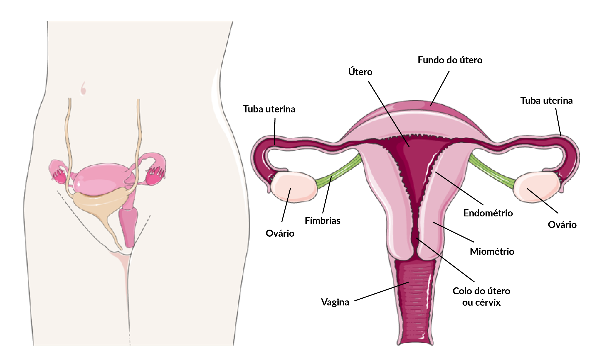

Constituem os órgãos genitais femininos o útero, os ovários, as trompas, a vagina e a genitália externa. O útero, as trompas e os ovários localizam-se na cavidade pélvica. O útero, em geral na mulher adulta, situa-se na posição antevertido e em anteflexão, isto é, dobra-se para frente em íntima relação com a bexiga, localizada logo abaixo, como mostrado nesta figura.
Anatomia genital feminina.

Fonte: Servier Medical Art by Servier (smart.servier.com), licenciada sob uma licença Creative Commons Attribution 3.0 Unported.